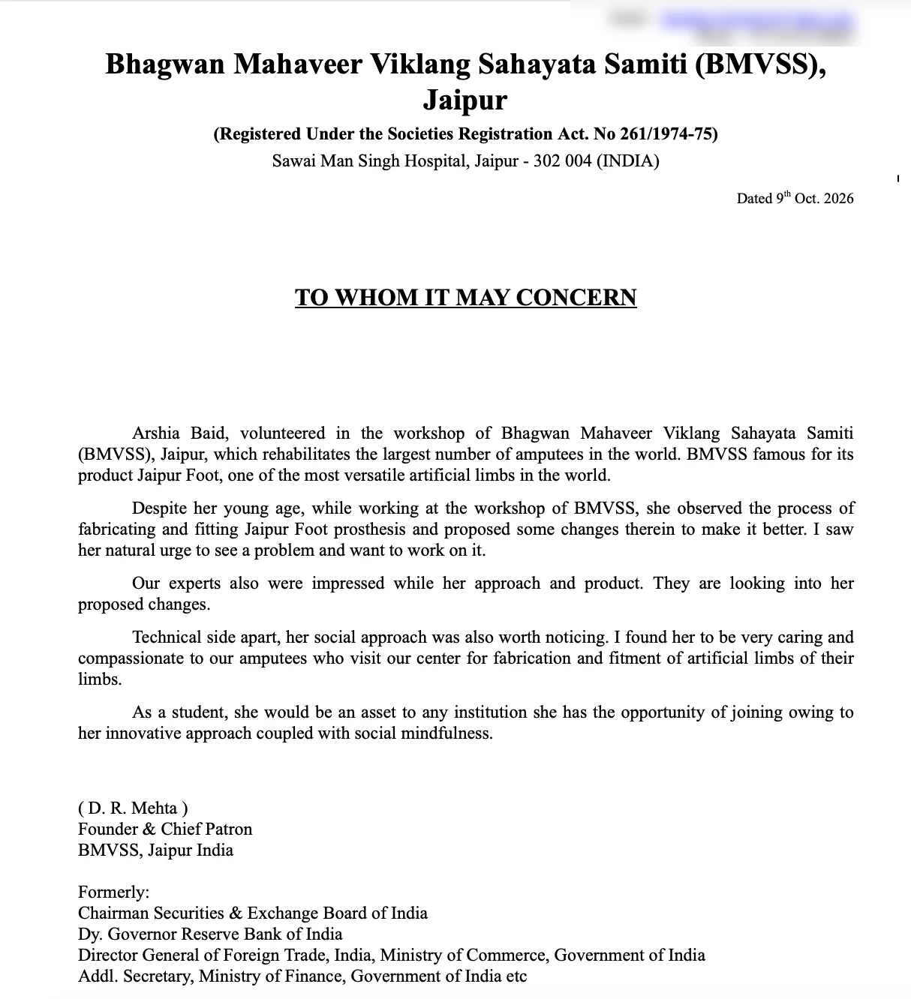

Jaipur Foot: arch redesign
During a school break I joined the design team at Bhagwan Mahaveer Viklang Sahayata Samiti (BMVSS), the organisation behind the Jaipur Foot, which fits more amputees than anyone else in the world. I traced why the rubber-composite foot cracks at the ankle and proposed an arch redesign. In simulation it cut peak stress at that junction by about 40%.
- Role
- Biomechanics intern, design team
- Organisation
- BMVSS (Jaipur Foot), Jaipur · 2.5M+ patients served
- Methods
- Workshop observation · failure analysis · FEA · stress testing
- Result
- ~40% lower simulated peak stress at the ankle–keel junction

Background
The Jaipur Foot is designed for real Indian lives. People walk long distances on uneven ground, often barefoot, and squat or sit cross-legged every day. So the foot has to flex like a natural one and still survive constant loading.
When one breaks, the cost isn't just a new foot. A patient may travel a long way for a repair and lose work or mobility while they wait. In the workshop I watched feet being fabricated and fitted, and spent time with the amputees who came in. Seeing how much depended on the foot lasting is what made the cracking problem matter to me.
Observation

The cracks start where the rigid ankle block meets the flexible keel. That junction carries the full bending load passed up from the ground to the ankle attachment during stance and toe-off. The bottom curve of the foot, the arch, was very shallow.
My hypothesis was that the low arch was forcing extra thrust and bending stress into that exact junction, and that this was causing the fatigue cracks.
Analysis
I modelled the keel between heel and forefoot contact as a shallow two-hinged arch carrying the ground reaction load. For a parabolic arch, the horizontal thrust pushed into the supports, here the ankle–keel junction, is:
H = w · L² / (8 · h)
Here w is the load, L the span from heel to toe contact, and h the arch height. Because h is in the denominator, flattening the arch makes the thrust into the junction rise sharply.


Simulations and proposal
Working with the design team, I built FEA simulations of the foot, studied existing test data, and tested how changes to the geometry shifted stress through the arch, heel and bridge. Raising the arch turns more of the load into compression along the curve, as in a masonry arch, instead of bending at the junction. That lowers the peak and moves it away from the crack-prone corner.
- Raise the plantar archIncrease the rise-to-span ratio, targeting about 2–2.5× the current height, to bring junction thrust well below fatigue-critical levels.
- Blend the transitionAdd a generous fillet radius at the ankle–keel junction so the reduced stress isn't concentrated again.
- Verify by testConfirm with FEA and cyclic roll-over fatigue testing (ISO 22675), with strain gauges on the junction, before release.
The revised design showed about 40% lower simulated peak stress at the ankle–keel junction, without moving to more expensive materials that would make the foot harder to afford or repair.
"She observed the process of fabricating and fitting Jaipur Foot prosthesis and proposed some changes therein to make it better. I saw her natural urge to see a problem and want to work on it. Our experts also were impressed with her approach and product. They are looking into her proposed changes."D. R. Mehta, Founder & Chief Patron, BMVSS, Jaipur

Reflection
A more expensive material might perform better on paper, but it could also make the foot harder to afford or repair for the people who need it most. I used to ask how to make a design stronger. Now I also ask whether the change actually helps the person wearing it.